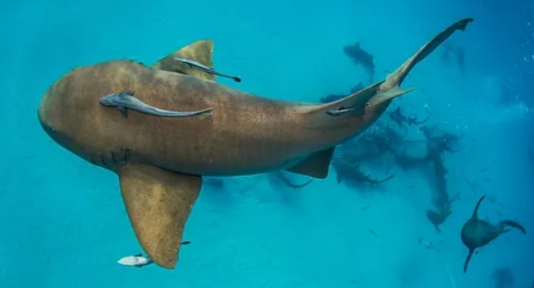

Gallery!
This is the gallery of the different marine animals and fun facts about them! Three of them will be sharks and the other two will be other cute animals I like.
This is a nurse shark, they range in size from 10 to 14 feet. They have very powerful jaws but are generally friendly.
This is a tiger shark, they have distinct markings on them that most people know them for. They are also willing to eat anything and everything!
This is a blacktip reef shark, these sharks are smaller, at less than 6 feet long. They prefer shallow waters and are not typically aggressive towards humans. Recently there have been more unprovoked attacks though.

This is a manta ray, they are huge, their width alone can reach 23 feet. They are highly intelligent and have great memory.
This is a beluga whale, they use echolocation to "see," what is around them. Surprisingly, they have good vision both in and out of water..